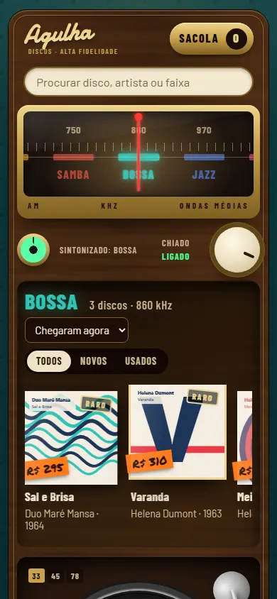
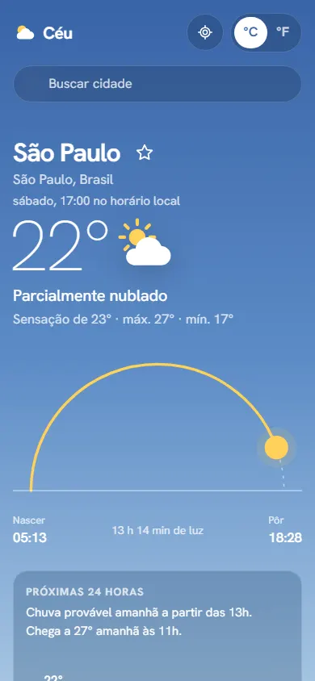
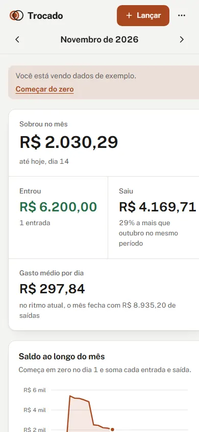
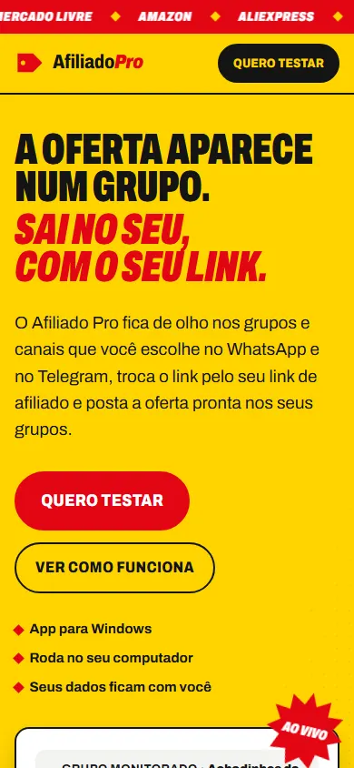

Guilherme
Sites e aplicações web feitos do zero, cada um com identidade própria e testado de ponta a ponta no desktop e no celular.
HTML, CSS e JavaScript sem framework · Web Audio · Canvas · SVG · APIs públicas · Playwright · GitHub Actions
Loja virtual
Agulha Discos
Uma loja de discos que funciona como uma radiola dos anos 60: você gira o dial para escolher o gênero, o disco cai no prato e o braço desce para tocar um trecho.
- Dial de sintonia com chiado entre as estações e olho mágico, feitos com Web Audio e CSS.
- Sacola com limite de estoque, frete pelo CEP (ViaCEP) e checkout validado.
- 24 capas e 24 trechos de música gerados por código, sem nenhum arquivo de imagem ou áudio.

App de clima
Céu
Previsão do tempo de qualquer cidade em que o fundo da página é a cor do céu de lá, naquela hora: azul de meio-dia, laranja de fim de tarde, noite, cinza de chuva.
- Cor do céu calculada pela posição do sol e pelas nuvens, com chuva e neve desenhadas em canvas.
- Busca de cidade acessível pelo teclado, cidades salvas, °C/°F e link compartilhável.
- Posição do aparelho arredondada e nunca gravada, depois de um alerta do CodeQL.

Controle de gastos
Trocado
Lançar um gasto leva segundos, e o mês inteiro cabe numa tela: quanto sobrou, para onde foi o dinheiro e qual orçamento está acima do ritmo.
- Valores guardados em centavos inteiros: a soma nunca sofre com arredondamento.
- Gráficos em SVG feitos à mão, sem biblioteca, seguindo o tema claro ou escuro.
- Importa e exporta CSV no formato brasileiro, com desfazer e atalhos de teclado.

Bot de atendimento
Balcão
Página do meu bot de atendimento no WhatsApp para empresas com várias unidades: ele faz as perguntas, escolhe a unidade e entrega o recado pronto para a equipe.
- Simulação da conversa que preenche o recado da unidade enquanto você responde.
- Explica o webhook com segredo por cliente, o buffer de 4 segundos e as marcas do modelo.
- O bot (Node.js, MongoDB, API do Claude) tem o código aberto.
Landing page
Afiliado Pro
Página do Afiliado Pro, um app para Windows que fiz para afiliados: ele pega a oferta que aparece num grupo e posta no grupo da pessoa, com o link de afiliado dela.
- Visual de encarte de supermercado, que é exatamente o que o app produz o dia inteiro.
- Demonstração ao vivo da oferta passando de um grupo para outro com o link trocado.
- Editor do modelo de anúncio com a formatação do WhatsApp e desconto só quando é real.

Em todos os projetos
- Sem framework, sem build
- HTML, CSS e JavaScript lidos direto pelo navegador. Abre no GitHub Pages do jeito que está no repositório.
- Testes de ponta a ponta
- Playwright roda cada cenário no desktop e no celular, com as APIs externas simuladas. 70 testes no total.
- Verificação a cada envio
- GitHub Actions roda os testes, o Lighthouse exige acessibilidade e boas práticas acima de 90, e o CodeQL procura falhas de segurança.
- Política de segurança rígida
- Nenhum script ou estilo embutido na página, e cada site só fala com os endereços de que precisa.